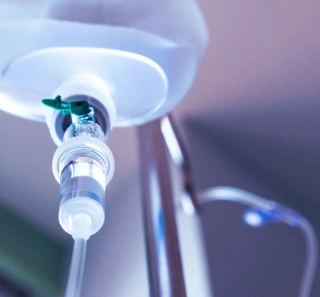

+380(97) 369 76
65
+380(97) 369 76
65Капельница от алкоголя в Харькове
Благодаря инновационным методам и профессиональным врачам вылечиваем алкогольную зависимость во всех случаях
Работаем в Одессе, Киеве, Львове, Харькове, Днепре, Запорожье


Бесплатная консультация, работаем круглосуточно 24/7
Благодаря инновационным методам и профессиональным врачам вылечиваем алкогольную зависимость во всех случаях
Работаем в Одессе, Киеве, Львове, Харькове, Днепре, Запорожье
Капельница при алкогольной интоксикации — это эффективный метод лечения, направленный на быстрое выведение алкоголя и токсинов из организма, восстановление нормального состояния после отравления. Алкоголь нарушает водно-солевой баланс, приводит к обезвоживанию, повышенной нагрузке на печень, почки и нервную систему. Капельницы помогают компенсировать эти эффекты, облегчая состояние пациента.
Наиболее распространенные капельницы при алкогольном отравлении и других состояниях — это растворы глюкозы и соли. Врачи чередуют 5%-10% раствор глюкозы с физиологическим раствором натрия хлорида (NaCl). Эти средства помогают снизить уровень алкоголя в крови и восполнить недостаток жидкости в сосудах, одновременно разжижая кровь (гемодилюция).
После капельницы от алкоголя организм проходит через несколько этапов восстановления. В первую очередь, благодаря введению глюкозо-солевых растворов, уменьшается концентрация алкоголя и токсинов в крови, что помогает ускорить процесс их выведения через почки. Это приводит к разжижению крови, улучшению микроциркуляции и снижению нагрузки на внутренние органы, особенно на печень и почки, которые отвечают за фильтрацию токсинов. Водно-солевые растворы восстанавливают уровень жидкости и электролитов, нарушенный из-за обезвоживающего эффекта алкоголя, что помогает нормализовать давление, улучшить работу сердца и снизить риск осложнений, связанных с электролитными нарушениями. Введение витаминов, антиоксидантов и других поддерживающих препаратов в составе капельницы помогает улучшить обмен веществ, восстановить работу нервной системы и укрепить иммунитет. В результате, человек чувствует себя значительно лучше: снижаются головные боли, уходит слабость, уменьшается тошнота и другие симптомы алкогольного отравления.
Стоимость капельницы от алкогольной интоксикации зависит от многих факторов, таких как тяжесть состояния пациента, объем выпитого, наличие хронических болезней. Изменение цены связанно с использованием дополнительных препаратов и увеличении длительности ведения пациента. Цена включает в себя: приезд врача, консультация, снятие ЭКГ (проверку сердца), капельницу со всеми необходимыми препаратами.
Анонимно

"Ну в хлопців просто золоті руки й світла голова, мене капали Олексій та Владислав, буквально за декілька сеансів я наче заново народився, до цього пив більше 3х тижнів, не міг зупинитись, дуже радий що знайшов саме цих спеціалістів, всім рекомендую"
Анонимно
"В течение нескольких лет я злоупотреблял алкоголь, что привело к увольнению с работы и вызвало у меня мысли о суициде. Понимая, что такой образ жизни неприемлем, я обратился за помощью в клинику "Амбрела". Здесь я смог преодолеть свою зависимость от спиртного благодаря заботливым и опытным врачам, а также эффективной системе лечения. Спустя более года я полностью избавился от желания употреблять алкоголь, и теперь моя жизнь вернулась в норму. Я даже не приближаюсь к спиртному! Благодарю врачей клиники "Амбрела" за их помощь и заботу."
Анонимно
"Я обращался за помощью в различные клиники, пытаясь избавиться от своей зависимости от алкоголя, но без особых успехов. Никак не мог справиться с желанием прибегнуть к бутылке, пока друг не посоветовал мне обратиться в центр "Амбрелла". Я записался на прием и был поражен заботливым отношением к пациентам. Уже прошло два года, и теперь я смотрю на алкоголь с абсолютной равнодушием, активно занимаюсь спортом и улучшил отношения в семье. Благодаря центру "Амбрелла" моя жизнь была спасена от алкогольной зависимости!"
Анонимно

"Хочу выразить свою благодарность врачам из центра алкоголизма "Амбрела" за то, что они буквально спасли мою жизнь. В течение последнего года я сильно увлекался питьем, и все это привело к катастрофическим последствиям. Хотя я ходил на терапевтические сеансы, но безрезультатно. Тогда я нашел адрес клиники "Амбрела" в интернете, изучил отзывы и информацию о центре, и записался на прием. Там мне сразу предложили методику лечения, которая помогла не только справиться с физической ломкой, но и психической зависимостью от алкоголя. Не буду распространяться, скажу только одно - после пребывания в этой клинике я стал другим человеком, и навсегда забыл, что такое привкус алкоголя. Больше меня не тянет на это! Я искренне верю, что в центре "Амбрела" трудятся настоящие целители душ!"
Анонимно
"После сложного развода мой сын начал подавлять свою обиду и горе употреблением алкоголя. Он старался скрывать это от меня, но я, как мать, почувствовала, что что-то не так. В конечном итоге, ситуация стала критической. Моя знакомая посоветовала мне обратиться в клинику "Амбрела". Я была приятно удивлена их работой! Они помогли сыну преодолеть очередной период злоупотребления алкоголем, и с тех пор прошел уже более года, и он совсем не пьет."
Анонимно
"Благодаря вашей помощи, моя семья была спасена. Я с трудом уговорила мужа начать лечение, и последний каплей был пьяное ДТП. К счастью, в аварии никто не пострадал, но это был для него сигнал к действию. Он наконец согласился пройти курс лечения на дому, в стационар не хотел ложиться. Лечение было трудным, и были моменты, когда срыв был настолько близок, но благодаря вашему центру Амбрелла мы справились с этим."
Анонимно
"Для меня эта клиника стала настоящим спасением! Долгое время я упорно отказывался от лечения, уверен был, что со мной все в порядке. Но к счастью, семья уговорила меня попробовать. И сегодня я чувствую себя невероятно счастливым, осознавая, что мне абсолютно не нужен алкоголь. Огромное спасибо за помощь и поддержку, которые я получил здесь! Я благодарен вам за новую возможность жить полноценной и счастливой жизнью!"
Анонимно
"Выражаю благодарность ребятам, которые оказали мне помощь и не отвернулись. Уже 10 месяцев я остаюсь чистой. Благодарю за то, что помогли найти новый путь в моей жизни."
Приезд в течении 60 минут от момента поступления заявки
Наши филиалы есть во всех больших городах Украины.
Мы оказываем профессиональную доказательную медицинскую помощь. Гарантией является наше имя.
Номер телефона:
+380 (97) 369 76 65
+380 (50) 021 69 57
Адрес главного офиса: г. Одесса Армейская 18/1
Офис вашего города нужно уточнить
Работаем в: Одессе, Киеве, Львове, Харькове, Днепре,
Запорожье
Telegram: t.me/umbrellaplus
График работы: Круглосуточно